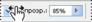

Панели и меню
Ввод значений на рабочих панелях, диалоговых окнах и панели параметров
Выполните одно из следующих действий:
Способы ввода значений
A. Стрелка меню B. Динамический регулятор C. Текстовое поле D. Шкала E. Ползунок
Работа с ползунками
Сведения о всплывающих ползунках
Некоторые рабочие панели, диалоговые окна и панели параметров содержат элементы настройки, использующие всплывающие ползунки (например, параметр «Непрозрачность» на панели «Слои»). Если рядом с текстовым полем есть треугольник, можно активировать всплывающий ползунок, щелкнув этот треугольник. Наведите курсор на треугольник рядом с параметром и, удерживая нажатой кнопку мыши, перетащите ползунок (или радиус угла) до нужной величины. Чтобы закрыть поле ползунка, щелкните за пределами поля или нажмите клавишу «Ввод». Чтобы отменить изменения, нажмите клавишу «Esc».
Чтобы увеличивать или уменьшать значение с шагом в 10 % при открытом поле ползунка, удерживайте клавишу «Shift» и нажимайте клавиши со стрелками вверх и вниз.
Использование различных видов всплывающих ползунков
A. Щелкните, чтобы открыть поле всплывающего ползунка. B. Перетащите ползунок или радиус угла.
Кроме того, некоторые всплывающие ползунки можно «тереть». Например, если навести курсор на слово «Заливка» или «Непрозрачность» на панели «Слои», курсор примет вид руки. Можно перемещать курсор влево или вправо, чтобы изменить процентное значение заливки или непрозрачности.
Сведения о динамических регуляторах
В некоторых рабочих панелях, диалоговых окнах и панелях параметров для изменения значений параметров можно перетаскивать динамические регуляторы. Динамические регуляторы скрыты до тех пор, пока курсор не наведен на заголовки ползунков и всплывающих ползунков. Когда курсор принимает вид указывающего пальца, перетащите его влево или вправо. При перетаскивании удерживайте клавишу «Shift», чтобы увеличить эффективность в 10 раз.

При наведении курсора на название ползунка или всплывающего ползунка отображается динамический регулятор.
Работа со всплывающими панелями
Всплывающие панели предоставляют простой доступ к параметрам кистей, образцов, градиентов, стилей, узоров, контуров и фигур. Всплывающие панели можно настраивать, переименовывая и удаляя элементы или загружая, сохраняя и заменяя библиотеки. Можно также изменить вид всплывающей панели, чтобы отображались имена элементов, миниатюры иконок или имена вместе с миниатюрами.
Щелкните миниатюру инструмента на панели параметров, чтобы он отображался на всплывающей панели. Чтобы выделить элемент на всплывающей панели, щелкните его.
Просмотр всплывающей панели «Кисти» на панели параметров.
A. Щелкните для отображения всплывающей панели. B. Щелкните для просмотра меню всплывающей панели.
Переименование или удаление элемента из всплывающей панели
Чтобы выделить элемент, щелкните треугольник в правом верхнем углу всплывающей панели и выберите одну из следующих команд.
Переименование набора параметров инструмента Позволяет ввести новое имя для элемента.
Удалить набор параметров инструмента Удаляет элемент из всплывающей панели.
Примечание. Также можно удалить элемент из всплывающей панели, щелкнув его, удерживая нажатой клавишу «Alt» (в Windows) или «Option» (в Mac OS).
Настройка списка элементов на всплывающей панели
- Для просмотра меню раскрывающейся панели щелкните треугольник в ее правом верхнем углу.
- Чтобы вернуться к библиотеке, используемой по умолчанию, выполните команду «Восстановить набор параметров инструмента». Можно либо заменить текущий список, либо дополнить его библиотекой, используемой по умолчанию.
- Чтобы загрузить другую библиотеку, выполните одно из следующих действий.
- Чтобы сохранить текущий список как библиотеку для дальнейшего использования, выберите команду «Сохранить набор параметров для инструмента». Затем введите имя для файла библиотеки и нажмите кнопку «Сохранить».
Включите в имя файла библиотеки расширение, чтобы библиотеки можно было использовать в разных операционных системах (для Mac OS). Установите флажок «Всегда добавлять расширение» в диалоговом окне «Обработка файлов», чтобы добавлять расширение к именам файлов.
Изменение отображения элементов во всплывающей панели
- Для просмотра меню раскрывающейся панели щелкните треугольник в ее правом верхнем углу.
- Выберите параметр просмотра: «Только имена», «Маленькие миниатюры и имена» и «Большие миниатюры и имена».
Отображение и определение меню
Отображение контекстных меню
В контекстных меню отображаются команды, относящиеся к активному инструменту, выделенной области или панели. Они отличаются от меню, находящихся в верхней части рабочей среды.
Просмотр контекстных меню для инструмента «Пипетка»
- Наведите курсор на изображение или элемент панели.
- Щелкните его правой кнопкой мыши (в Windows) или щелкните, удерживая клавишу «Control» (в Mac OS).
Определение набора меню
- Выполните одно из следующих действий:
- В диалоговом окне «Клавиатурные сокращения и меню» выберите набор меню в раскрывающемся списке «Набор». Дополнительные сведения о создании нового набора.
- Выберите тип меню в раскрывающемся списке «Меню».
- Щелкните треугольник рядом с именем меню или панели.
- Выполните одно из следующих действий:
Меню программы Позволяет отображать, скрывать или добавлять цвет к элементам в меню программы.
Меню панели Позволяет отображать, скрывать или добавлять элементы в меню панели.
- По окончании внесения изменений в меню выполните одно из следующих действий.
- В диалоговом окне «Сохранить» введите имя набора и нажмите кнопку «Сохранить».
Выбор цвета для элемента меню в диалоговом окне «Клавиатурные сокращения и меню»
Удаление набора меню
- Выполните одно из следующих действий.
- В диалоговом окне «Клавиатурные сокращения и меню» выберите набор меню в раскрывающемся списке «Набор».
- Щелкните значок «Удалить текущий набор меню».
Временное отображение скрытых элементов меню
Существует возможность временно отобразить элементы меню, которые были скрыты. После закрытия меню элементы снова становятся скрытыми.
Выполните одно из следующих действий:
Чтобы постоянно отображались все пункты меню, выберите «Окно» > «Рабочая среда» > «Основная рабочая среда».
Включение и выключение цвета меню
В установках интерфейса установите или снимите флажок «Показывать цвета меню».